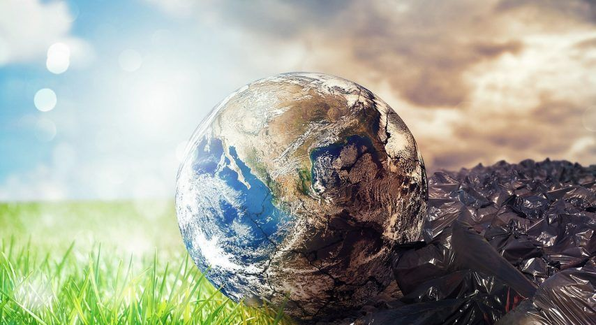

La contaminación ambiental es cuando el aire, el agua o el suelo se ensucian o se dañan por culpa de sustancias o actividades que hacemos las personas. Esto perjudica la salud de las personas, de los animales y de las plantas, y también afecta al equilibrio de la naturaleza. En general, ocurre cuando liberamos al medio ambiente demasiados residuos, gases o productos químicos que la naturaleza no puede limpiar por sí sola.
Tipos de contaminación ambiental
- Contaminación del aire: sucede cuando gases y partículas de coches, fábricas o quemas de basura se mezclan con el aire. Puede causar problemas respiratorios, alergias y contribuir al cambio climático.
- Contaminación del agua: ocurre cuando se tiran basura, plásticos, petróleo o productos químicos a ríos, lagos y mares. Esto daña a los peces, a las plantas acuáticas y también al agua que usamos para beber o para regar cultivos.
- Contaminación del suelo: se produce cuando se acumula basura, metales pesados o pesticidas en la tierra. Eso daña los cultivos, afecta a los animales que viven en el suelo y puede llegar a las personas a través de los alimentos.
- Contaminación acústica: es el exceso de ruido, por ejemplo de tráfico, obras o aviones, que puede causar estrés, falta de sueño y otros problemas de salud.
- Contaminación lumínica: es el exceso de luz artificial en las ciudades por la noche, que altera el descanso de las personas y también a los animales que viven en la oscuridad.
Causas principales
- Uso de combustibles fósiles (petróleo, gasolina, carbón) en coches, fábricas y centrales eléctricas.
- Uso excesivo de plásticos, pesticidas y otros productos químicos que luego terminan en el agua o en la tierra.
- Tala de bosques, incendios y cambios de uso del suelo para agricultura o construcción.
- Mala gestión de la basura: tirar residuos en la calle, en ríos o en vertederos ilegales, en lugar de reciclar o tirarlos en los contenedores adecuados.
Consecuencias
La contaminación ambiental puede provocar enfermedades respiratorias, alergias, problemas del corazón y otros daños en la salud de las personas. También afecta a los animales y a las plantas, provocando la pérdida de biodiversidad y la destrucción de hábitats. Además, contribuye al cambio climático, al calentamiento global y a fenómenos como inundaciones, sequías o lluvia ácida.
